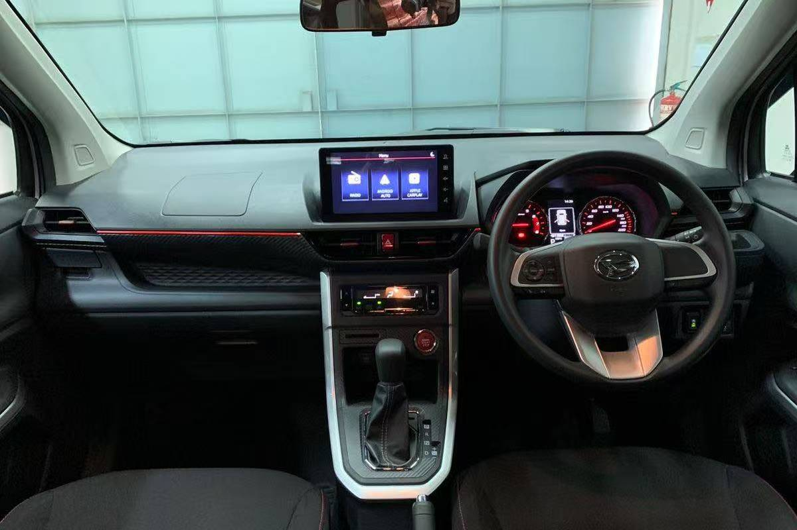

Simple route
12-14 days across Canggu, Ubud, the Kintamani volcanoes, Nusa Penida and Uluwatu - paced so you actually feel the island, not just photograph it.
Real scenes our travellers experienced - beaches, rice terraces, volcanoes and cliff temples.
A field-tested flow that balances surf towns, culture, volcanoes and islands. Use it as-is, or let the AI tailor it to you.
Land and ease in along the south-west coast - one full day each in Canggu, Seminyak and Kuta. Beach clubs, surf lessons, sunset bars and cafes to shake off the jet lag.
Two days in the cultural heart - rice terraces, temples, art markets, yoga and spa. The slower, greener side of Bali.
Head up to Kintamani for Mount Batur and Mount Agung. Optional sunrise trek for the adventurous, and a stay at a hotel with volcano views.
Cross to Nusa Penida - one day west island, one day east island. Dramatic cliffs, hidden beaches and snorkeling with manta rays.
The southern Bukit peninsula - Uluwatu's clifftop temple and Kecak fire dance, plus the white-sand beach clubs of Melasti.
Loop back to the south-west for last-minute souvenirs, favourite cafes and a relaxed farewell to the island.

Distances in Bali are deceptive and public transport is thin. Our verified local driver Dicky handles airport transfers, hotel pickups and full-day private tours - English-speaking and traveller-approved.